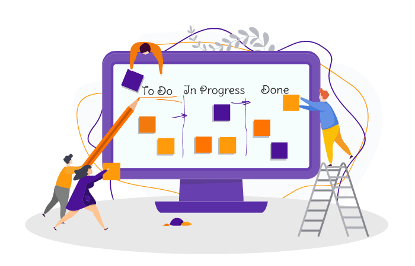

<body style="background-image: url(../../assets/MainBackground.jpg);height: 100%;width: 100%;">
    <div class="topnav" >
        
        <a  style="color: black;font-family: 'Great Vibes', cursive;margin-left: 80px;" routerLink="">Kanban Board</a>
        <a style="color: black;"  routerLink="">Home</a>
        <a style="color: black;" routerLink="/about">About</a>
        <a style="color: black;margin-left: 60%;" routerLink="/login">Log In</a>
        <a style="color: black;" routerLink="/register">Sign Up</a>
    </div>
    
    
    <div style="margin-top: 12%;">
    <!-- <div style="font-family: 'Yellowtail', cursive;;font-size: 50px;margin-left: 70%;color:rgba(170, 188, 201, 1);">to</div> -->
    

    
    
    
    <ul style="font-size: xx-large ;margin-left: 60%;margin-top: -13%;">
      <li>Start with what you do now.</li><br>
      <li>Simple to implement and improve.</li><br>
      <li>Provides flexibility in production.</li><br>
    </ul>
    <!--  -->
</div>
<div style="border-top: 8px solid #254A73; width:91%;margin-left: 5%;margin-top:7%"></div>
<div id="footer" style="text-align: center;">

    <ul style="margin-left: 17%;">
      <li><a href="index.html">TermsFeed © 2021 - 2022</a> |</li>  Cookies Policy  Terms of Use
      <li><a target="_blank" routerLink="/privacy">Privacy Policy</a> |</li>
      <li><a href="index2.html">Cookies</a> |</li>
      <li><a href="index2.html">Terms of Use</a> </li>
    </ul>
    <div style=" margin-left: 75%;margin-top: -3%"></div>
    <div style=" margin-left: 80.5%;margin-top: -2.7%"></div>
    <div style=" margin-left: 87.5%;margin-top: -3%"></div>
    <div style=" margin-left: 94.3%;margin-top: -3.1%"></div>
    <div style=" margin-left: 99.3%;margin-top: -2.5%"></div>

   
  </div>
</body>

